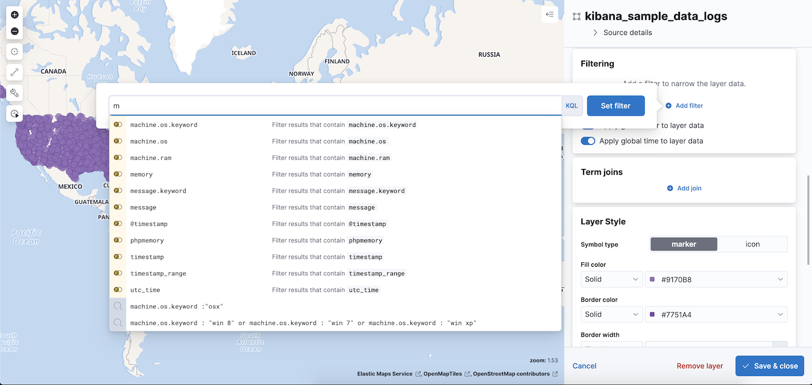

Filter a single layer
editYou can apply a search request to individual layers by setting Filters in the layer details panel.
Click the Add filter button to add a filter to a layer.
Layer filters are not applied to the right side of term joins. You can apply a search request to the right side of term joins by setting the where clause in the join definition. For example, suppose you have a layer with a term join where the left side is roads and the right side is traffic volume measurements. A layer filter of roadType is "highway" is applied to the roads index, but not to the traffic volume measurements index.
